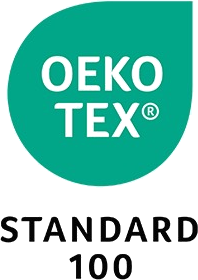
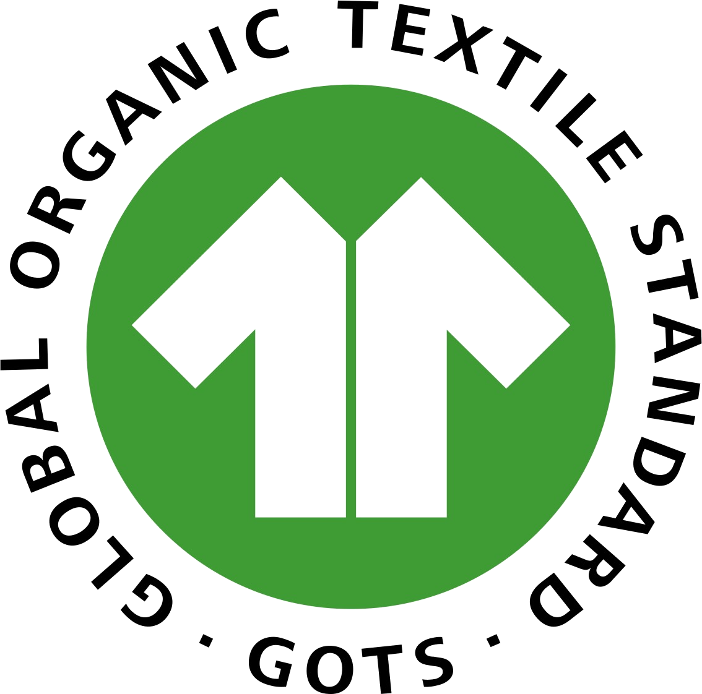
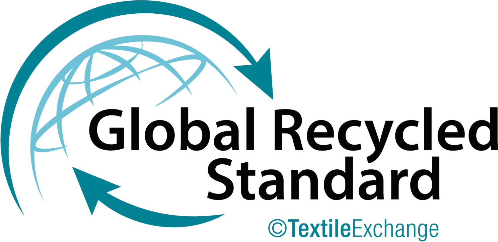

機能布料Performance Fabrics
BOYU TECH TEX 整合多元紡織材料資源，從舒適機能布料、專利技術材料到具備第三方認證的紡織品，依據產品用途、穿著需求與預算，協助企業評估合適的材料解決方案。BOYU TECH TEX helps businesses evaluate textile options—from comfort and performance fabrics to patented technologies and third-party certified materials—based on intended use, wearability and budget.
洽詢專案需求Discuss Your Project探索布料系列Explore Fabrics技術與服務Expertise
OEKO-TEX、GOTS 與 GRS 標誌使用你提供的圖樣；其他項目為分類示意。各項認證的適用產品及使用範圍仍須依有效證書與授權確認。OEKO-TEX, GOTS and GRS marks are supplied by BOYU; other icons are illustrative. Certification claims depend on valid documentation and authorized product scope.
紡織技術專利Textile Patents
專利纖維、機能紗線、特殊織造或後整理技術。Patented fibers, performance yarns, weaving and finishing technologies.

產品安全驗證Product Safety
OEKO-TEX STANDARD 100。OEKO-TEX STANDARD 100.

有機紡織材料Organic Textiles
GOTS。GOTS.

再生材料Recycled Materials
GRS。GRS.
機能測試Performance Testing
涼感、透氣、吸濕排汗、防潑水等第三方測試報告。Third-party test reports for cooling, breathability, moisture management and water repellency.
開始專案Start a Project
分享需求、用途、預估數量與預算，BOYU 將協助評估適合的方向。Share your application, quantity and budget to discuss a suitable approach.
透過 LINE 聯繫Contact via LINE前往網站詢價Go to Inquiry